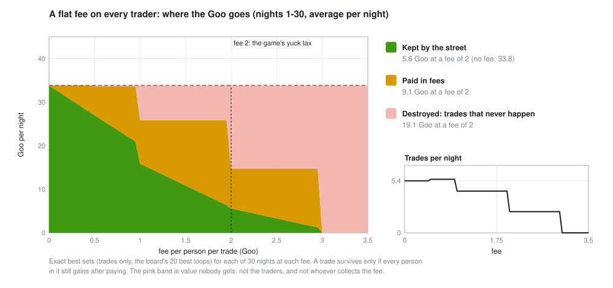

Put a 2-Goo fee on everyone in every trade on Market St. The fees raise 9 Goo a night. The street loses 28. The other 19 just vanish: trades that would have helped everyone, never made. This lesson measures where the money goes, and why thin edges die first.
On Market St, a trade is a loop of 2 to 4 people, each handing one thing on and getting one back. It only happens if everyone in it gains, measured in Goo: what a thing is worth to that person, tonight. (If that's new, The Machine explains it.) Every night, the best set of trades is the one that makes the most Goo without moving any item twice.
Now add a cost. In the game it's called yuck: some nights, some people are in such a mood that a trade has to clear an extra 2 Goo before it's worth it to them. Here we do the clean version: a flat fee of f Goo, paid by every person in every trade. A trade survives only if each person's gain is still above zero after the fee.
Then, for 30 nights and every fee from 0 to 3.5 Goo, we find the exact best set of trades and split the Goo three ways: what the street keeps, what it pays in fees, and what is destroyed, because the trades that made it never happen.

That's a fee of 2 Goo, per night, out of 33.8. The fees collected are the smaller part of the damage. Most of what the street loses goes to no one: trades that were good for everybody fail the fee test and never happen. Economists call this deadweight loss. It's why a tax, a commission or a spread can cost a market much more than it raises.
A loop needs every person in it to gain. So a trade doesn't die when its total gain is small. It dies when its smallest gain falls below the fee. A 4-way loop worth 9 Goo, split 3 + 3 + 2 + 1, dies at a fee of 1, because of the one person who only gains 1. Longer loops pay more fees and have more people who can be the weak link, so they go first.
Gains on Market St are whole Goo, so nothing changes until the fee crosses a whole number. Then every trade whose thinnest gain was that number dies at once. Between steps, the same trades happen and the fees just transfer more Goo out of the street. At a fee of 3, no trade on any of the 30 nights survives: the market closes.
Revenue (the gold band) peaks at 19.5 Goo a night at a fee of 1.95, just under a step. At exactly 2 a whole tier of trades dies and revenue crashes to 9.1. Push a cost a hair too far and you lose the very activity you were charging for.
Swap "a trade" for "a trading strategy" and nothing changes:
Yuck is this lesson's fee, applied to some people instead of everyone. Measured on 30 nights, 48 spins each: two yucky people at a tax of 2 cut the candidate trades on an average night from 11.5 to 7.2. Each yucky person costs the street about 5 Goo, two and a half times their tax. The game shows the trades yuck killed as ghost strips, and part of playing is working out who's spreading it.
From the source:
# this lesson's figure (and the numbers it prints)
cargo run --release --example machine_figs -- fees
# yuck in the trade computer: two yucky people, or a pump
cargo run --release --example trade_cli -- run --yuck upd,vape --tax 2
cargo run --release --example trade_cli -- yuck --nights 1..30 --runs 48The fee model is best_trades in examples/machine_figs.rs. Each person's gain is computed in src/trade/cycles.rs as the value of what they get, minus the value of what they give, minus their fee.
A fee of 0.5 Goo barely changes which trades happen. Why not, and what does it change?
Every gain is a whole number of Goo, at least 1, so a 0.5 fee never pushes a gain to zero and no trade dies. It just moves 6.7 Goo a night from the street to the fees. (Trades per night even tick up slightly, 5.4 to 5.6. The fee is charged per person, so it can tip the best set toward shorter loops.)
Two trades are each worth 8 Goo in total. One is a 2-way swap split 4 + 4, the other a 4-way loop split 5 + 1 + 1 + 1. Which survives a fee of 1.5? How much does each pay in fees if it survives?
The 2-way swap survives (4 − 1.5 > 0 for both) and pays 2 × 1.5 = 3 Goo, keeping 5. The 4-way loop dies: three of its people gain only 1, less than the fee. Had it survived, it would have paid 4 × 1.5 = 6 Goo of its 8 in fees.
You run the counter and keep the fees. What fee do you charge, and what happens to the street if you're greedy by 0.05 Goo?
1.95 raises the most, 19.5 Goo a night, and the street keeps 6.4. At 2.0 every trade whose thinnest gain was 2 dies: revenue falls to 9.1 and the street keeps 5.6. Both of you lose.
A strategy makes 0.08% per trade before costs and trades 250 times a year. Costs are 0.05% per trade. Roughly what does it make a year, before and after costs? What if it trades twice as often for the same edge per trade?
Before costs about 250 × 0.08% = 20%; after, 250 × 0.03% = 7.5% (ignoring compounding). Trading twice as often doubles both: 40% before, 15% after. But if trading more means a thinner edge per trade, say 0.06%, the net per trade falls to 0.01% and the year to 5%. The edge has to clear the cost on every single trade.